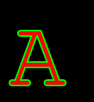

6.2.0¶
API Additions¶
Text stroking¶
stroke_width and stroke_fill arguments have been added to text drawing
operations. They allow text to be outlined, setting the width of the stroke and
and the color respectively. If not provided, stroke_fill will default to
the fill parameter.
from PIL import Image, ImageDraw, ImageFont
font = ImageFont.truetype("Tests/fonts/FreeMono.ttf", 40)
font.getsize_multiline("A", stroke_width=2)
font.getsize("ABC\nAaaa", stroke_width=2)
im = Image.new("RGB", (100, 100))
draw = ImageDraw.Draw(im)
draw.textsize("A", font, stroke_width=2)
draw.multiline_textsize("ABC\nAaaa", font, stroke_width=2)
draw.text((10, 10), "A", "#f00", font, stroke_width=2, stroke_fill="#0f0")
draw.multiline_text((10, 10), "A\nB", "#f00", font,
stroke_width=2, stroke_fill="#0f0")
For example,
from PIL import Image, ImageDraw, ImageFont
im = Image.new("RGB", (120, 130))
draw = ImageDraw.Draw(im)
font = ImageFont.truetype("Tests/fonts/FreeMono.ttf", 120)
draw.text((10, 10), "A", "#f00", font, stroke_width=2, stroke_fill="#0f0")
creates the following image:

ImageGrab on multi-monitor Windows¶
An all_screens argument has been added to ImageGrab.grab. If True,
all monitors will be included in the created image.
API Changes¶
Image.getexif¶
To allow for lazy loading of Exif data, Image.getexif() now returns a
shared instance of Image.Exif.
Deprecations¶
Image.frombuffer¶
There has been a longstanding warning that the defaults of Image.frombuffer
may change in the future for the “raw” decoder. The change will now take place
in Pillow 7.0.
Security¶
This release catches several buffer overruns, as well as addressing CVE-2019-16865. The CVE is regarding DOS problems, such as consuming large amounts of memory, or taking a large amount of time to process an image.
In RawDecode.c, an error is now thrown if skip is calculated to be less than zero. It is intended to skip padding between lines, not to go backwards.
In PsdImagePlugin, if the combined sizes of the individual parts is larger than the declared size of the extra data field, then it looked for the next layer by seeking backwards. This is now corrected by seeking to (the start of the layer + the size of the extra data field) instead of (the read parts of the layer + the rest of the layer).
Decompression bomb checks have been added to GIF and ICO formats.
An error is now raised if a TIFF dimension is a string, rather than trying to perform operations on it.
Other Changes¶
Removed bdist_wininst .exe installers¶
.exe installers fell out of favour with PEP 527, and will be deprecated in Python 3.8. Pillow will no longer be distributing them. Wheels should be used instead.
Flags for libwebp in wheels¶
When building libwebp for inclusion in wheels, Pillow now adds the -O3 and
-DNDEBUG CFLAGS. These flags would be used by default if building libwebp
without debugging, and using them fixes a significant decrease in speed when
a wheel-installed copy of Pillow performs libwebp operations.